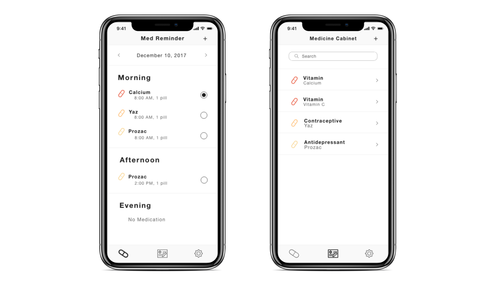

Yelp Design Challenge
Reimagining the zoo experience.
FOR
Yelp
ROLE
UX/Interaction/Interface Designer, User Researcher
WHEN
Summer 2018
(A day at the zoo + x hrs working on the actual challenge)
TOOLS USED
Invision, Adobe XD
DESIGN PROMPT
Going to the zoo is a fun family activity. Create an app that allows someone to either
a) plan their visit ahead of time, or
b) catalogue their experience while they’re at the zoo.
. . .
THE PROCESS
- Understand + Explore: I make sure I understand the space I am designing for through a variety of research methods, and then explore and ideate on potential solutions.
- Design: I aspire to create a solution that is easy to use and enhances the user experience.
- Reflect: I reflect on my design and make future considerations on how the solution can be improved and possibly scaled.
. . .
Understand + Explore
USER RESEARCH
As I had not been to the zoo since 7th grade, and I was visiting home for a week (San Diego), I decided to put myself in the shoes of someone planning a trip to the zoo and go. This was extremely helpful as I was able to dispel incorrect assumptions I had made prior to visiting.
Step 1: Which zoo to go to?
I began by googling through different sites for the best zoo near me.
What I looked at:
- Reviews from other people
- The types of animals the zoo had
- Current attractions
- Price
Step 2: Buying my ticket
After deciding on a zoo, I tried to look for additional discounts I could get on the ticket. I looked on various sites, such as Groupon and Yelp, and eventually found a AAA discount that got me a few dollars off.
Step 3: Packing for the trip
Not knowing what was allowed or not inside, I searched it up on the official zoo site, and also looked at other people's blogs to see what they recommended. I packed sunscreen, a hat, water, and snacks.
Step 4: Getting to the zoo and parking
This part was pretty straight forward. I wasn't familiar with the area, but Google Maps directed me right into the parking lot. The hard part was remembering where I parked for after because they labelled it in a fairly intuitive way. I was somewhere between koala 3 and toucan 5.
Step 5: Getting inside
I was digging deep into my emails at the entrance of the zoo and then realized they didn't email me my tickets. I had to go into the ticket line and ask someone to print out my tickets. This defeated the whole point of buying the ticket online.
Step 6: What to do inside?
I didn’t plan out what I was going to do there the night before because searching for the zoo gave me a general idea of what the zoo had to offer.
The first thing you see when you walk inside is a huge map. It was pretty overwhelming and I had no idea where to start. A zoo volunteer there recommended that I take the bus tour that gives an overview of the zoo, and then walk around to see my favorites after.
IN-PERSON INTERVIEWS
While at the zoo, I interviewed 3 families at the zoo (1 from Indonesia, 1 from Washington state, and 1 that was local), a few volunteer workers there, and I also interviewed 4 of my friends who have been to the zoo before to understand the current zoo experience and how they plan their trips.
KEY INSIGHTS
I gathered key insights from my research online, planning out my own trip, and interviewing other people. These key insights helped influence my design decisions.
People are willing to travel a great distance to see the zoo, proximity is not a problem.
Most groups generally had kids in them. They were mostly families, but there were a few school groups too.
Most people generally plan to go to the zoo and buy their ticket ahead of time, but they don’t plan what they are doing there before they get there.
There’s a lot of different resources you need to use online to plan a trip to the zoo (i.e. best ticket prices, and good exhibits to see), but not one place to do everything.
INFORMATION ARCHITECTURE
. . .
Let's start designing
SKETCHES
WIREFRAMES
THE SOLUTION
TAKEAWAYS + FUTURE CONSIDERATIONS